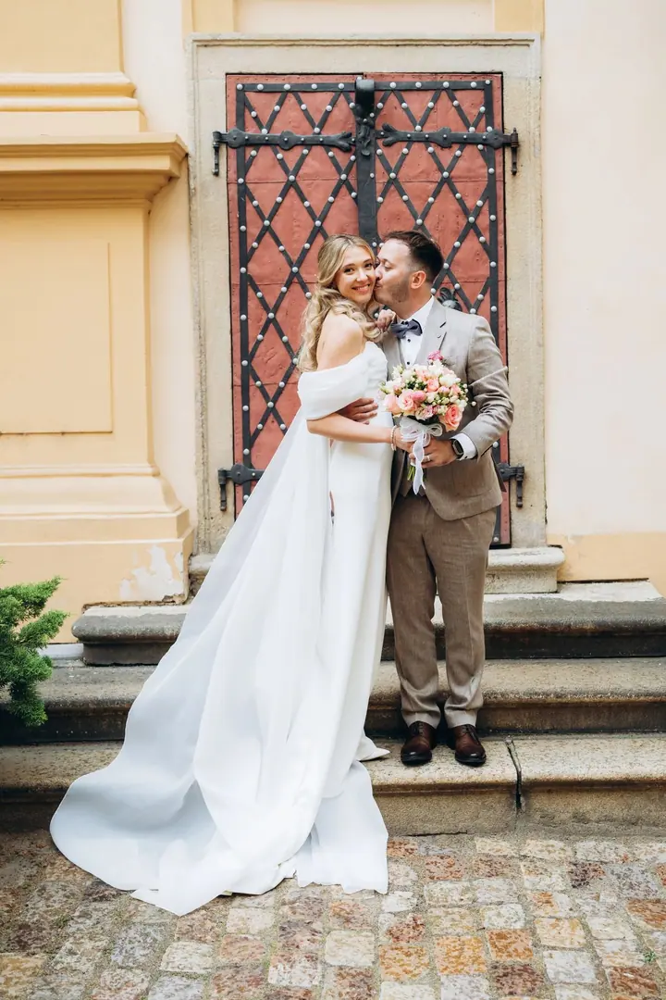
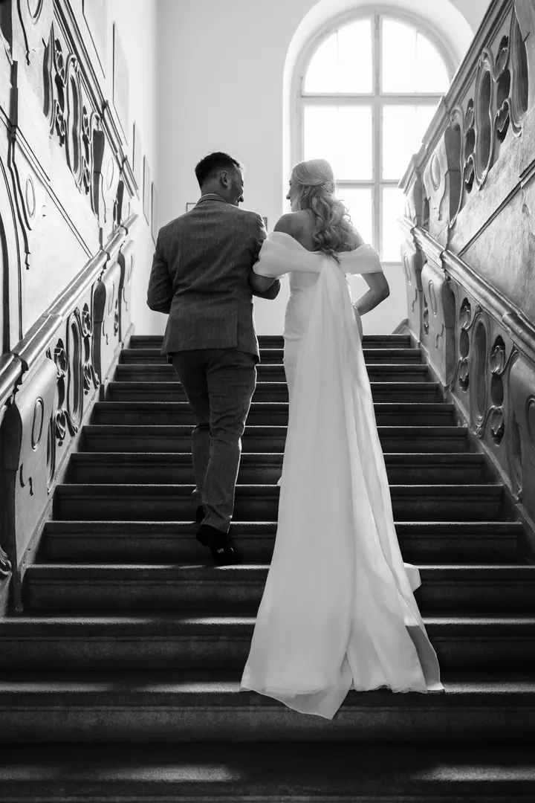
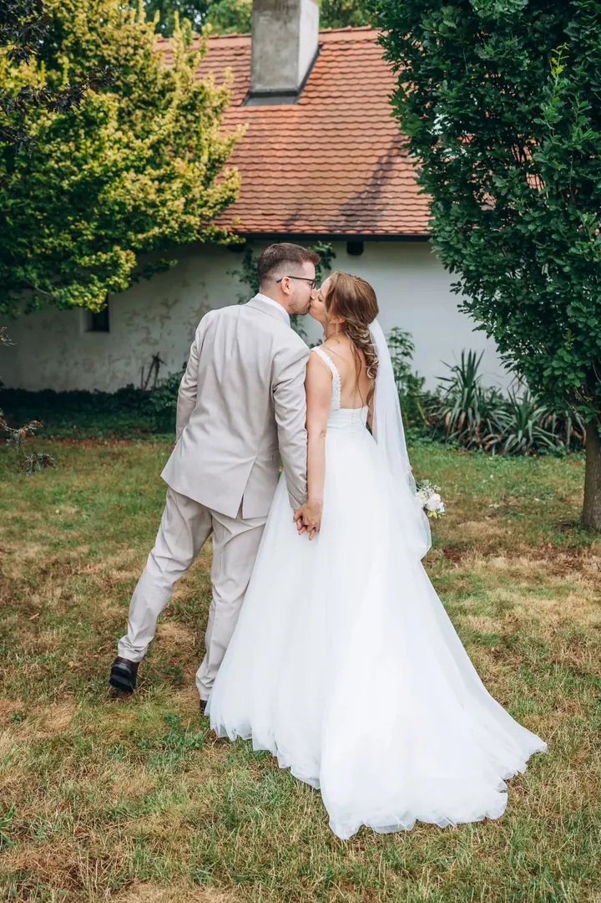

Svatební focení
Na svatbě jsem především pozorovatelem a den dokumentuji takový, jaký je. Vybrat si můžete 3 hodiny s obřadem a portréty, 8 hodin se vším podstatným nebo 12 hodin od ranních příprav po večerní oslavu.





Jmenuji se Jana Jezberová a jsem svatební fotografka z Prahy. Mám ráda nadčasovou eleganci, přirozené barvy a místa s vlastní duší. Na svatbě jsem hlavně pozorovatelem a jemně vás nasměruji jen tam, kde je to potřeba.
Více o mně
„Věřím v krásu okamžiků, kdy zapomenete na pózy a focení se stane přirozenou součástí vašeho příběhu.“
— Jana Jezberová
Na svatbě jsem především pozorovatelem a den dokumentuji takový, jaký je. Vybrat si můžete 3 hodiny s obřadem a portréty, 8 hodin se vším podstatným nebo 12 hodin od ranních příprav po večerní oslavu.
Při něm se navzájem poznáme a vyzkoušíte si, jak focení probíhá. Ve svatební den pak budete uvolněnější a fotky působí ještě autentičtěji.
Mám ráda jedinečnou, pozitivní energii, která provází každý svatební den. Baví mě zachycovat příběh, který se odvíjí mezi novomanželi a jejich blízkými. Nejraději fotím na místech s vlastní duší: v prosvětlených sálech, rozkvetlých zahradách a mezi drobnými detaily, které tvoří atmosféru vašeho dne.
Vím, že většina z vás nestojí před objektivem každý den. Většinu dne jsem proto neviditelná a jen při společném focení vás jemně nasměruji, abyste se cítili uvolněně. Mám ráda čistou eleganci a přirozené barvy, aby vaše fotky neztratily kouzlo ani po letech.
Mimo svět svateb jsem společenská duše a nejlépe je mi s rodinou a přáteli. Miluji dobrou kávu, cestování po světě i výlety po Česku. V zimě si nejvíc užívám saunu a sklenku červeného vína, v létě dlouhé večery v dobré společnosti a zmrzlinu.

Nejdřív si potvrdíme volný termín a můžeme si zavolat, abychom se poznali. Rezervaci dokončíte úhradou 20 % z ceny balíčku.
Zhruba měsíc před svatbou se potkáme osobně nebo online, projdeme váš harmonogram a všechna přání. Schůzku můžeme spojit s předsvatebním focením.
Většinu dne dokumentuji tak, jak plyne. Na novomanželské focení si nejraději domlouvám dva kratší bloky po 30 minutách v různém světle.
Do 3 dnů od svatby vám pošlu výběr prvních fotek. Kompletní upravenou galerii dostanete v online galerii nejpozději do 4 týdnů.
Balíček na 3 hodiny stojí 10 000 Kč, na 8 hodin 23 000 Kč a na 12 hodin 29 000 Kč. Celodenní balíček zahrnuje i předsvatební focení.
Výběr prvních „ochutnávkových“ fotek vám pošlu do 3 dnů od svatby. Kompletní galerii dostanete nejpozději do 4 týdnů v online galerii, kterou snadno nasdílíte svým blízkým.
Neupravené RAW soubory neposkytuji. Pečlivý postproces a barevné ladění jsou nedílnou součástí mého rukopisu.
Déšť a mraky dodávají fotkám jedinečnou atmosféru. Vždy mám s sebou průhledné deštníky a společně najdeme místa, kde vzniknou krásné portréty v suchu.
Nejraději domlouvám dva kratší bloky po 30 minutách. Získáte tak různorodé záběry a brzy se vrátíte ke svým blízkým.